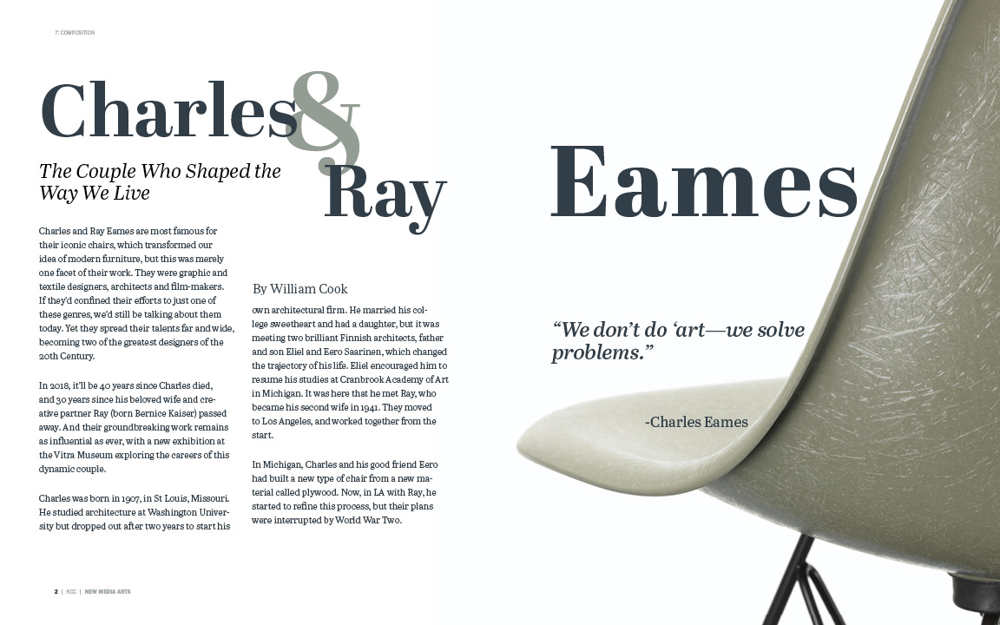
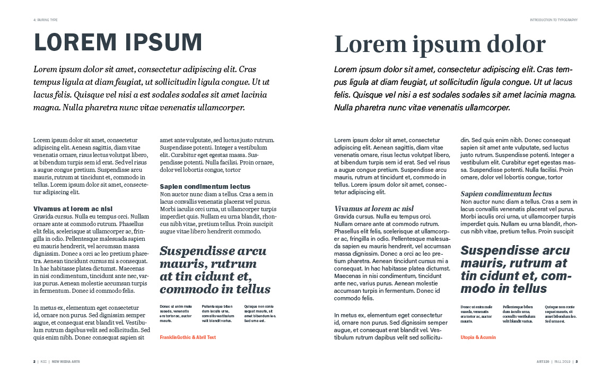
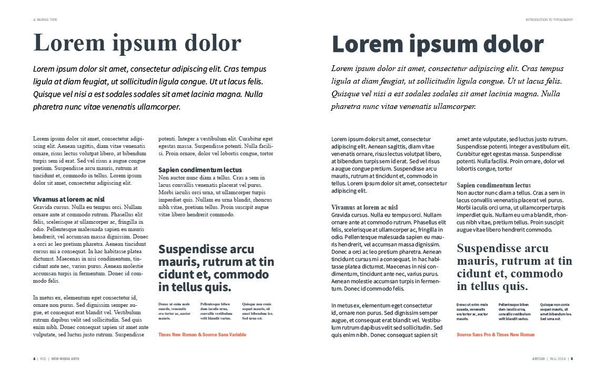
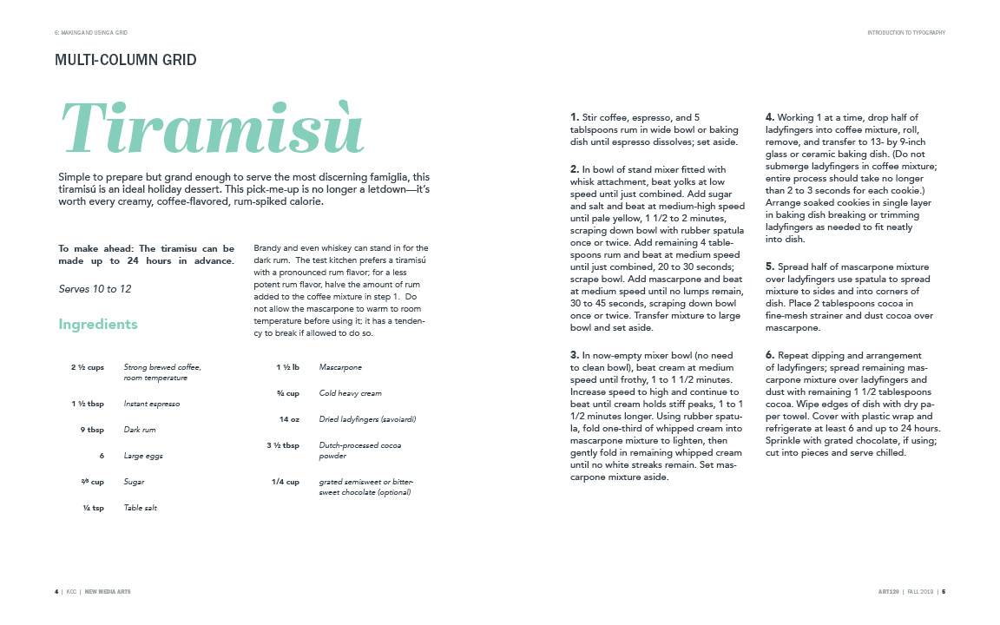
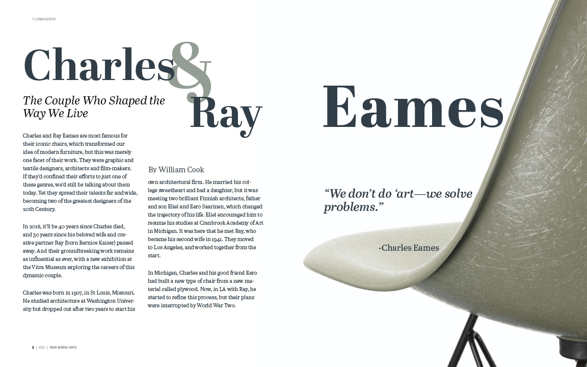
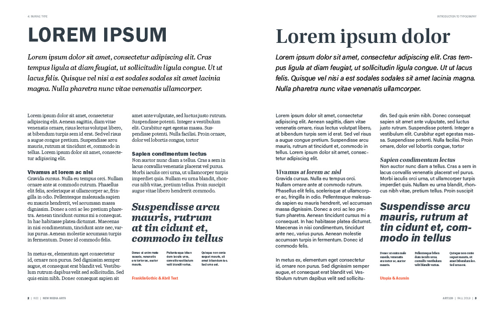
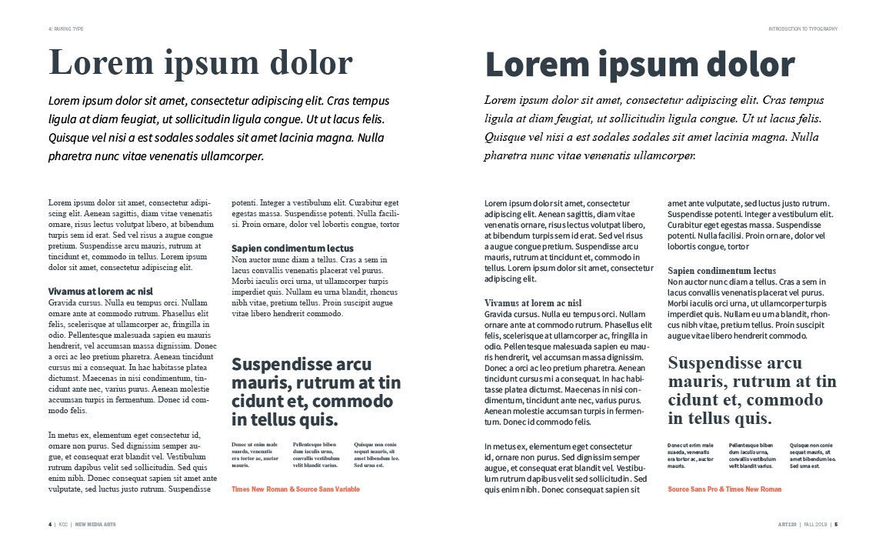
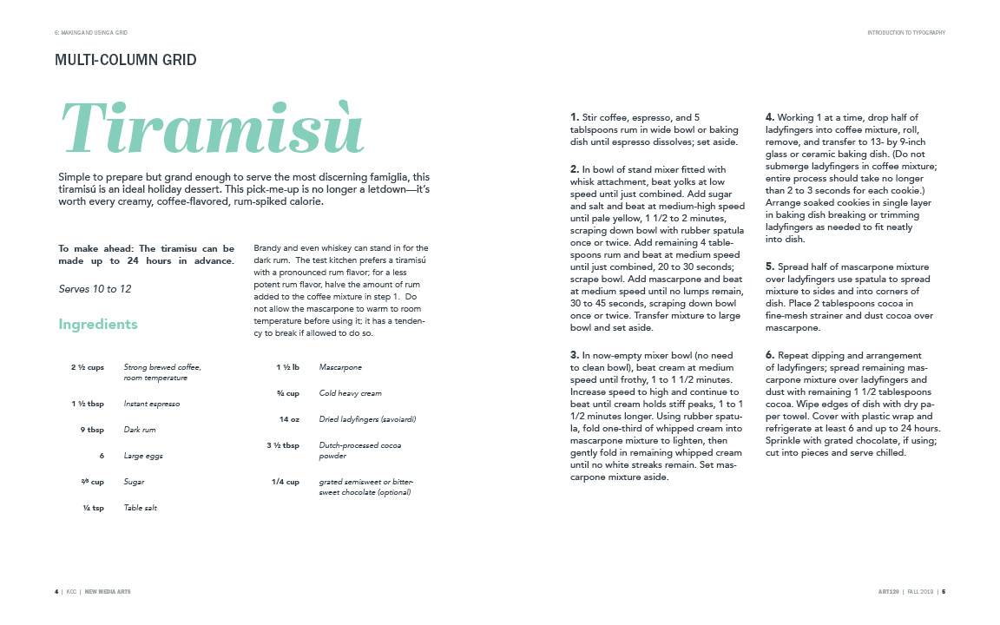

Typography Book
Through the power of typography, we can create a powerful design, with just text.
A book designed to hold valuable knowledge about typography. This project demonstrates my knowledge of typography through a series of design explorations. I was given the assignment to fill out a digital template with each chapter relating to a new typographic lesson. These lessons ranged from choosing and pairing type, creating grids, composition, and more. It was an exciting project that allowed me to understand the importance of great typography.
Service: Book Design
Software Adobe Indesign
Skills: Understanding Typography
 






